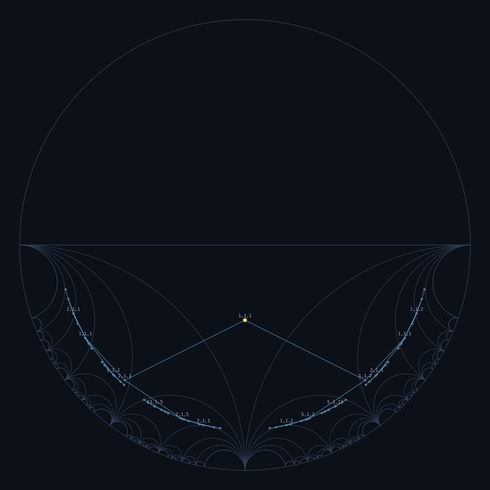

the ideal triangles of the farey tessellation, drawn as geodesics in the poincare disc. the blue web is the dual tree — the markov tree. walk from (1,1,1) across any edge and you replace one coordinate by 3ab−c (vieta). every triple you land on solves x²+y²+z² = 3xyz.
the gold dot at the centre is the root. for the playable version — click an edge to flip it, step the triples — see the interactive disc.